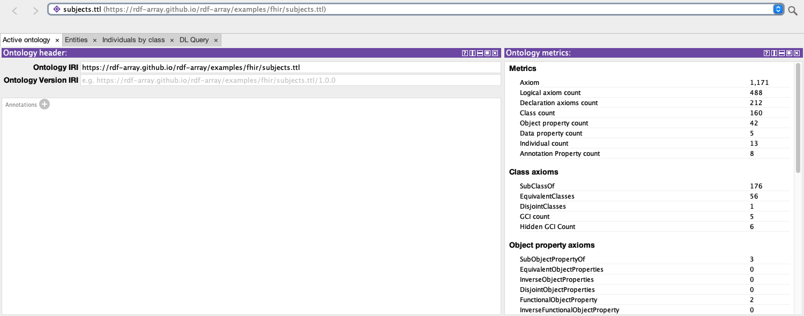
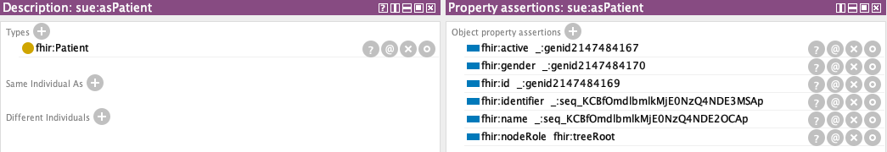
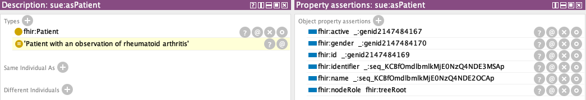
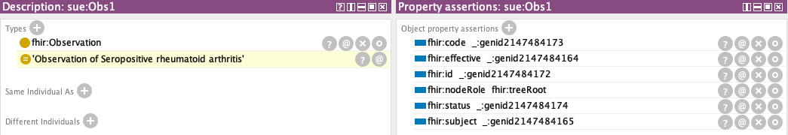
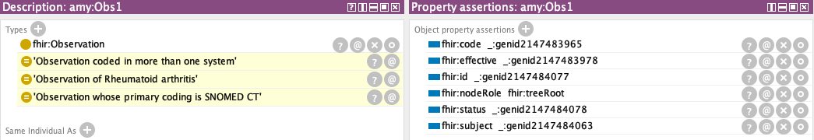
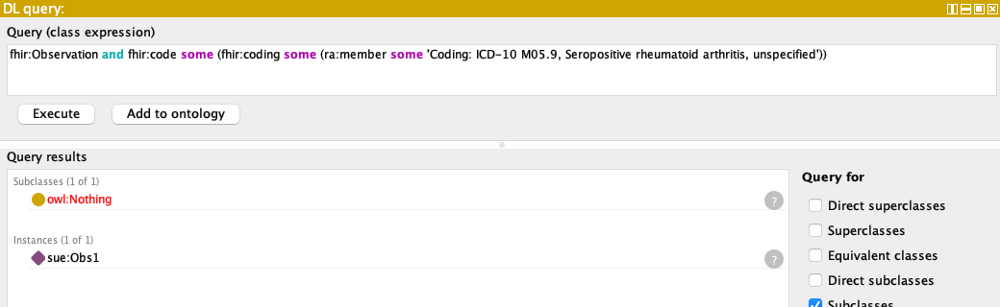
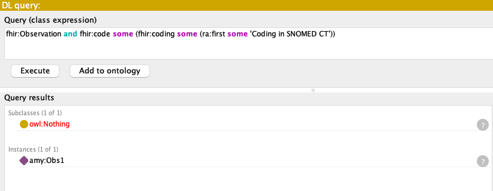
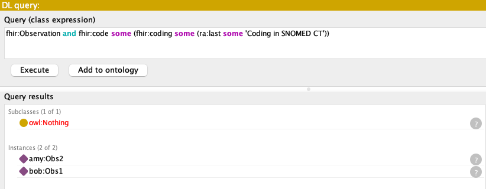
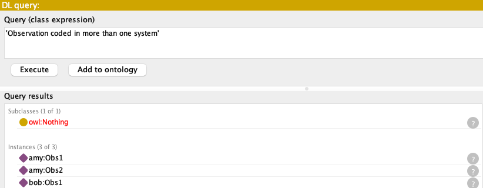
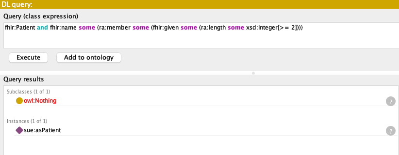

rdf-array · OWL-array in Protégé · demo
Protégé reads FHIR's lists and reasons across them
A walk-through in Protégé 5.6.9. The data is FHIR RDF as FHIR writes it today, where every repeated element is a Turtle list ( … ). Protégé loads it with no triple left over, shows each list as a single term, and HermiT classifies observations and patients by what sits inside those lists: by a coding at any position, by the first or last coding, and by the length of a list.
- 0triples left unparsed, in 10 ontologies
- 16 → 16lists in the data, sequence terms in Protégé
- 24 / 24DL queries list the expected instances
- 2.5 sfor HermiT to classify the whole closure
The data is rdf-array's FHIR example. Two pieces make it work. owlapi-array is the OWL API that Protégé 5.6 runs on, taught by OWL-array to read a list as one term. It replaces Protégé's own OWL API bundle under the same name and version, so every other plugin runs unchanged. protege-owl-array adds two entries to the Reasoner menu that understand the list built-ins ra:member, ra:first, ra:last and ra:length. Protégé itself is not modified. The screenshots below are Protégé's own window, painted to PNG by the walk-through harness in protege-owl-array. Its log is protege/walkthrough.txt. Most figures show a detail of the window; click one for the whole window.
1Set it up
You need Git, Maven and a JDK 11 or newer. assemble.sh starts from the stock Protégé 5.6.9 zip and swaps in the two jars, which it builds from source on the first run (about two minutes; later runs take seconds):
git clone https://github.com/rdf-array/protege-owl-array.git
git clone https://github.com/rdf-array/rdf-array.git
cd protege-owl-array
./assemble.sh Protege-5.6.9-owl-array
JAVA_HOME=$(/usr/libexec/java_home -v 21) \
Protege-5.6.9-owl-array/run.sh ../rdf-array/examples/fhir/subjects.ttlThe java_home line is for macOS. Elsewhere, set JAVA_HOME to any JDK 11 or newer: the platform-independent zip brings no Java of its own. subjects.ttl imports Amy's, Bob's and Sue's records, the arthritis and blood-pressure definitions, a SNOMED CT extract, a little of the FHIR ontology and the OWL-array vocabulary. Its catalog-v001.xml maps each import to the file beside it.
2The data: lists everywhere
This is Amy's rheumatoid-arthritis observation, from subject-amy.ttl. Its CodeableConcept holds two codings, SNOMED CT first and ICD-10 second, and FHIR writes them as a list:
amy:Obs1 a fhir:Observation ;
fhir:code [
a sct:69896004 ;
fhir:coding ( [
fhir:system [ fhir:v "http://snomed.info/sct"^^xsd:anyURI ; fhir:l <http://snomed.info/sct> ] ;
fhir:code [ fhir:v "69896004" ] ;
fhir:display [ fhir:v "Rheumatoid arthritis" ]
] [
fhir:system [ fhir:v "http://hl7.org/fhir/sid/icd-10"^^xsd:anyURI ; fhir:l <http://hl7.org/fhir/sid/icd-10> ] ;
fhir:code [ fhir:v "M06.9" ] ;
fhir:display [ fhir:v "Rheumatoid arthritis, unspecified" ]
] ) ;
fhir:text [ fhir:v "Rheumatoid arthritis" ]
] ;
fhir:subject [ fhir:reference [ fhir:v "Patient/amy" ] ; fhir:l amy:asPatient ] .Sue's observation has a single ICD-10 coding, and no SNOMED CT type on the CodeableConcept at all. Anything a reasoner learns about it has to come from inside the list:
sue:Obs1 a fhir:Observation ;
fhir:code [
fhir:coding ( [
fhir:system [ fhir:v "http://hl7.org/fhir/sid/icd-10"^^xsd:anyURI ; fhir:l <http://hl7.org/fhir/sid/icd-10> ] ;
fhir:code [ fhir:v "M05.9" ] ;
fhir:display [ fhir:v "Seropositive rheumatoid arthritis, unspecified" ]
] ) ] ;
fhir:subject [ fhir:reference [ fhir:v "Patient/sue" ] ; fhir:l sue:asPatient ] .Patients have lists as well, and the lists nest. Sue's names are a list, and the one name has a list of two given names:
sue:asPatient a fhir:Patient ;
fhir:name ( [
fhir:family [ fhir:v "Jones" ] ;
fhir:given ( [ fhir:v "Sue" ] [ fhir:v "Ann" ] )
] ) .In plain RDF each of these lists is a chain of rdf:first/rdf:rest triples. OWL reserves that vocabulary for its own syntax, and FHIR's RDF page says lists "cause problems for OWL 2". Read over rdf-array a list is one term, a sequence, and OWL can describe it.
3Open it: every list is parsed
Protégé opens subjects.ttl and follows the nine imports. The closure is 10 ontologies and 1,171 axioms. The walk-through checked each ontology's loader report: no triple is left unparsed, rdf:first appears in no signature, and the 16 lists in the data are 16 sequence terms.

subjects.ttl.In the Individuals tab, a list shows up where a blank node would. Sue's fhir:identifier and fhir:name each point to a single term, named _:seq_…. The name is derived from the list's contents, so two equal lists are the same term.

fhir:identifier and fhir:name are list terms. Whole window4Start the reasoner
The Reasoner menu lists HermiT 1.4.3 (OWL-array) and ELK 0.6.0 (OWL-array) beside the stock HermiT and ELK. Pick HermiT 1.4.3 (OWL-array), then Reasoner › Start reasoner. It wraps the stock HermiT and hands it each list's meaning: its members, first and last element, and length. The ontology you are editing is not changed. The closure is consistent and is classified in about two and a half seconds.
The first inference already reaches through two lists. Sue is now a "Patient with an observation of rheumatoid arthritis", shown in yellow:

The only evidence is the ICD-10 code M05.9 inside the coding list of Sue's observation. arthritis.ttl says that a CodeableConcept with such a coding among its codings is an instance of the SNOMED CT concept:
# any member of the coding list, at any position
fhir:coding some (ra:member some (:Coding-of-sct-239791005 or :Coding-of-icd10-M05.9))
SubClassOf sct:239791005 # Seropositive rheumatoid arthritisFrom there SNOMED CT's hierarchy makes it an observation of rheumatoid arthritis. fhir:subject then leads from the observation to Sue.
5Observations classified by their lists
Select an observation in the Individuals tab to see what the reasoner made of it. Sue's observation is one of "Seropositive rheumatoid arthritis", found through ra:member as above:

Amy's observation picks up three types, and two of them depend on the shape of the list rather than on any single coding:

# 'Observation whose primary coding is SNOMED CT': the first element of the list
fhir:Observation and fhir:code some (fhir:coding some (ra:first some :Coding-in-SNOMED))
# 'Observation coded in more than one system': the length of the list
fhir:Observation and fhir:code some (fhir:coding some (ra:length some xsd:integer[>= 2]))Protégé shows these the way it shows any inferred type, as yellow rows. To Protégé, the lists are ordinary OWL terms.
6Ask the DL Query tab
Open the DL Query tab, tick Instances, and type a class expression. Protégé names entities by their rdfs:label, and the query editor parses names as it displays them. So a SNOMED CT class is typed 'sct:Rheumatoid arthritis (disorder)', not sct:Rheumatoid_arthritis-disorder. Some queries that look into the lists:
A coding anywhere in the list: ra:member

The first or the last coding: ra:first, ra:last


The length of the list: ra:length

A list inside a list

= 2]))). Instances: sue:asPatient.">All 24 queries of the example, typed this way, list the instances that the OWL API run (FhirReasoning.java) finds. A selection:
| Typed in the DL Query tab | Instances |
|---|---|
'Observation of Rheumatoid arthritis' | amy:Obs1 bob:Obs1 sue:Obs1 |
'Observation of Seronegative rheumatoid arthritis' | bob:Obs1 |
fhir:Observation and fhir:code some (fhir:coding some (ra:member some 'Coding in ICD-10')) | amy:Obs1 bob:Obs1 sue:Obs1 |
'Patient with an observation of rheumatoid arthritis' | amy:asPatient bob:asPatient sue:asPatient |
fhir:Observation and fhir:code some (fhir:coding some (ra:length value 1)) | sue:Obs1 |
'bp:Observation of blood pressure with exactly two components' | amy:Obs2 |
fhir:Observation and fhir:code some (fhir:coding some ra:EmptySequence) | (none) |
The full table is in §4 of the example.
7What else the walk-through showed
- Saving round-trips.
arthritis.ttl(whoseowl:unionOflists are OWL's own) andsubject-sue.ttl(lists of blank nodes, one inside another) save as Turtle and as RDF/XML and read back with the same axioms. The only difference is theowl:NamedIndividualdeclarations the writers add. An ontology opened from Turtle is saved as Turtle. - ELK sees no FHIR data. With ELK 0.6.0 (OWL-array), only the 2 queries whose answer is empty come out right. ELK skips anonymous individuals, and every FHIR element is a blank node (rdf-array#20).
- A list is never an answer. The DL Query tab lists named individuals, so observations and patients appear, but their codings and lists do not (rdf-array#21).
- Lists display by node ID. A list shows as
_:seq_…until owlapi-array's Manchester-syntax renderer, which Protégé's own renderer extends, learns to write( … ). That would need no change to Protégé. xsd:datestops HermiT. FHIR writes dates asxsd:date, which is not in the OWL 2 datatype map, so the example data leaves birth dates out.